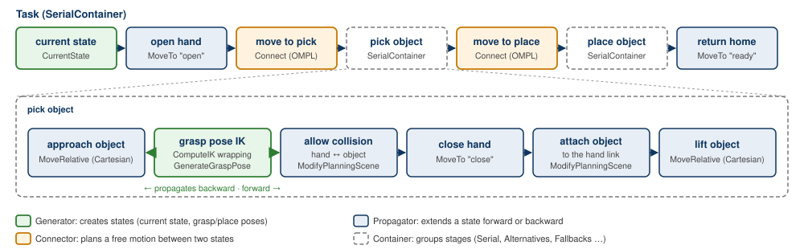

layout: true <div class="header"><img src="../../../common/logo/ros_industrial_logo.png" alt="ROS-Industrial" style="background-color:transparent"/></div> <div class="footer"><img src="https://www.ipa.fraunhofer.de/content/dam/ipa/ipa.svg" /><p>© Fraunhofer IPA</p></div> <div class="triangle"></div> --- class: center, middle name: main_title # MOVEIT TASK CONSTRUCTOR (MTC) ### Planning multi-step manipulation tasks Runnable examples (`mtc_examples`): pick and place on the FR3 and the Piper, Fallbacks on all robots – [github.com/ROS-Industrial-Session-Common/moveit_examples](https://github.com/ROS-Industrial-Session-Common/moveit_examples) --- ## Why a task constructor? A pick and place is not one motion but a **chain of dependent motions**: open hand → move to object → approach → close hand → lift → move to target → place → open → retreat - Each step depends on choices made in other steps: **which grasp**, **which IK solution** - Planning the steps one by one → **dead ends**: a grasp is chosen that cannot be lifted or placed - MTC plans the **whole task at once** - explores many candidates (grasp poses, IK solutions) and keeps the combinations that work end to end - returns several **complete solutions**, ranked by cost - lets you inspect every stage and every failure in RViz - The result is a sequence of trajectories (arm, hand) plus planning scene changes (attach, detach, allow collisions), executed in order --- class: dense ## Core concepts .cols[ .fifty[ #### Task and stages - **Task**: a `SerialContainer` of stages, plus the robot model and the start scene - **Generators** create states from nothing - `CurrentState`, `FixedState` - `GenerateGraspPose`, `GeneratePlacePose`, `GeneratePose` - **Propagators** extend a state forward or backward - `MoveTo` (goal: named state, joints, pose) - `MoveRelative` (distance along a direction) - `ModifyPlanningScene` (attach, detach, allow collisions) - **Connectors** plan a free motion between two states - `Connect` (usually OMPL) - **Wrapper**: `ComputeIK` turns generated poses into robot states ] .fifty[ #### Containers | Container | Behaviour | |-----------|-----------| | `SerialContainer` | Children in sequence | | `Alternatives` | All children planned, all solutions kept, best cost wins | | `Fallbacks` | Children tried in order until one succeeds | | `Merger` | Children planned in parallel and merged (e.g. arm + hand) | #### Solvers (how a stage computes motion) | Solver | Motion | |--------|--------| | `PipelinePlanner` | Any MoveIt pipeline: OMPL, Pilz, … | | `CartesianPath` | Straight line of the end effector | | `JointInterpolationPlanner` | Linear in joint space (no collision avoidance) | ] ] --- ## Pick and place as a stage pipeline <p></p> .note[Generators sit in the middle of the chain: `grasp pose IK` produces candidate states, the approach is planned **backward** from them, the hand closing **forward**. `Connect` stages then join the start state with the grasp sequence.] --- class: dense, small-code ## The code, in short .cols[ .sixty[ ```cpp mtc::Task task; task.loadRobotModel(node); task.setProperty("group", "arm"); // inherited by the stages task.setProperty("eef", "gripper_eef"); // SRDF end effector task.setProperty("ik_frame", "gripper_tcp"); task.add(std::make_unique<mtc::stages::CurrentState>("current")); // + MoveTo "open hand" (JointInterpolationPlanner) // + Connect "move to pick" (PipelinePlanner: OMPL) auto pick = std::make_unique<mtc::SerialContainer>("pick object"); // MoveRelative "approach" (CartesianPath, along the tool axis) auto grasps = std::make_unique<mtc::stages::GenerateGraspPose>("grasps"); grasps->setObject("object"); grasps->setAngleDelta(M_PI / 12); // 24 candidates around the object auto ik = std::make_unique<mtc::stages::ComputeIK>("grasp IK", std::move(grasps)); ik->setIKFrame(grasp_frame, "gripper_tcp"); // object center in the TCP frame // ModifyPlanningScene allow (hand, object) · MoveTo "close" · attach · lift // + Connect "move to place" · place container · MoveTo "home" if (task.plan(5)) // up to 5 complete solutions task.execute(*task.solutions().front()); ``` ▶ `ROBOT=piper docker compose run --rm mtc_pick_place` (or `fr3`)<br/> Code: [mtc_examples/src/pick_place.cpp](https://github.com/ROS-Industrial-Session-Common/moveit_examples/blob/main/mtc_examples/src/pick_place.cpp) ] .forty[ - **Properties** are set once on the task and inherited (`configureInitFrom`, `exposeTo`) - Each stage gets a **solver**: OMPL for free motions, Cartesian for approach / lift / retreat, joint interpolation for the hand - **grasp_frame**: where the TCP sits on the object. Top grasp: tool z down, TCP a few cm below the top of the object - `CurrentState` reads the planning scene of `move_group`: the object must be in it before planning - `task.printState()`: solutions / failures per stage, also when planning fails ] ] --- class: dense, small-code ## Running a task .cols[ .fifty[ #### Requirements - `move_group` with the **execution capability**:<br/> `capabilities: move_group/ExecuteTaskSolutionCapability`<br/> (default of the `move_group_server` container) - The MTC node **plans in-process** (IK, pipelines): it needs the MoveIt parameters of the robot, like MoveItPy:<br/> `MoveItConfigsBuilder(...).to_moveit_configs().to_dict()` - Controllers that accept the trajectories (e.g. `allow_nonzero_velocity_at_trajectory_end: true`) ```bash sudo apt install ros-jazzy-moveit-task-constructor-core \ ros-jazzy-moveit-task-constructor-capabilities \ ros-jazzy-moveit-task-constructor-visualization ``` ] .fifty[ #### RViz: Motion Planning Tasks panel - Stage tree with the number of **successful / failed** solutions per stage - Click a stage: its solutions, or the **comment** of a failure (e.g. "eef in collision", "no IK solution") - Play back any complete solution before executing it #### Execution - `task.execute()` sends the solution to `move_group` - The sub-trajectories (arm, hand) and scene changes are applied **in order** .note[Tutorial: moveit.picknik.ai → "Pick and Place with MoveIt Task Constructor"] ] ] --- class: dense, small-code ## Containers for robust tasks .cols[ .fifty[ ```cpp // Fallbacks: try the solvers in order until one succeeds auto fallbacks = std::make_unique<mtc::Fallbacks>("move to joint goal"); auto add_move = [&](const auto& solver, const std::string& name) { auto move = std::make_unique<mtc::stages::MoveTo>(name, solver); move->setGroup(arm_group); move->setGoal(joint_goal); fallbacks->add(std::move(move)); }; add_move(cartesian, "Cartesian path"); // straight line: often infeasible add_move(pilz_ptp, "Pilz PTP"); // deterministic add_move(ompl, "OMPL"); // avoids obstacles task.add(std::move(fallbacks)); ``` ▶ `docker compose run --rm mtc_fallbacks`: on the UR the Cartesian path succeeds, on the GP50 it fails and Pilz PTP takes over ] .fifty[ - **Fallbacks**: prefer the predictable motion (Cartesian, PTP), fall back to OMPL only when needed - **Alternatives**: plan several options and keep the cheapest, e.g. pick with the left **or** the right arm of the dual FR3 cell (two pick containers) - **Merger**: combine motions of different groups, e.g. move the arm while opening the hand - **Costs**: solutions are ranked by cost (default: path length); custom cost terms can favour clearance or short joint motion ] ] --- class: dense ## Limitations and tips - **C++ is the reference API**. Python bindings exist (`moveit.task_constructor`) but with fewer examples - **Planning time grows quickly**: grasp candidates × IK solutions × connectors - limit with `setAngleDelta`, `setMaxIKSolutions`, stage timeouts and `task.plan(max_solutions)` - **Property inheritance** (`exposeTo`, `configureInitFrom`) is the most common source of errors such as "missing property: group" - **Grasp generation is basic**: rotations around the object axis. For real objects, feed poses from a grasp planner into a `GeneratePose` stage (or write your own generator) - **Grasp IK fails for every candidate?** Usually the hand collides with the object at the grasp pose: check the grasp frame (depth, orientation) - **Open loop**: MTC plans once and executes. If the world changes, plan again; combine with a behaviour tree or state machine for recovery - **Debug in RViz**: start with the shortest task (current state → open hand), add stages one by one and watch the failure comments #### References - Tutorial: [moveit.picknik.ai](https://moveit.picknik.ai) → Pick and Place with MoveIt Task Constructor - Source and demos: [github.com/moveit/moveit_task_constructor](https://github.com/moveit/moveit_task_constructor) (`demo/src`: `fallbacks_move_to.cpp`, `alternative_path_costs.cpp`, …)